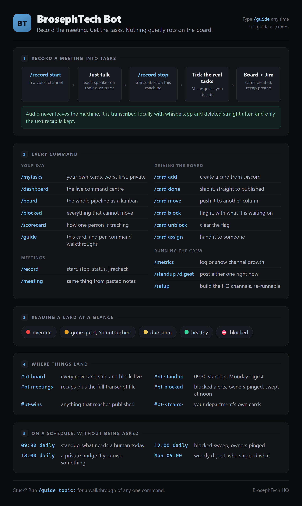
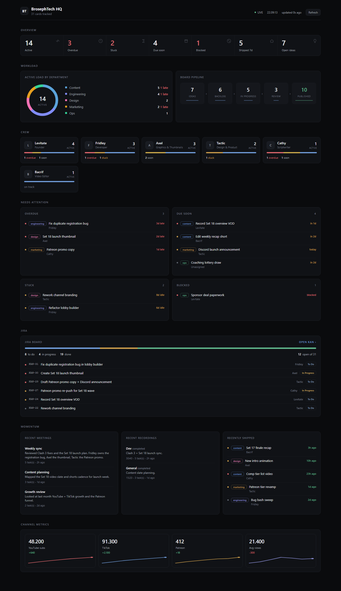
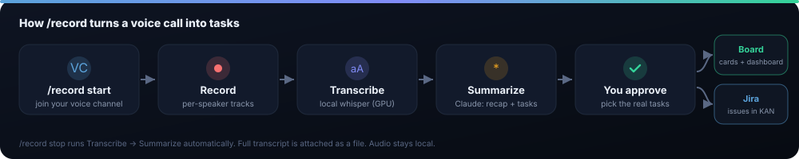
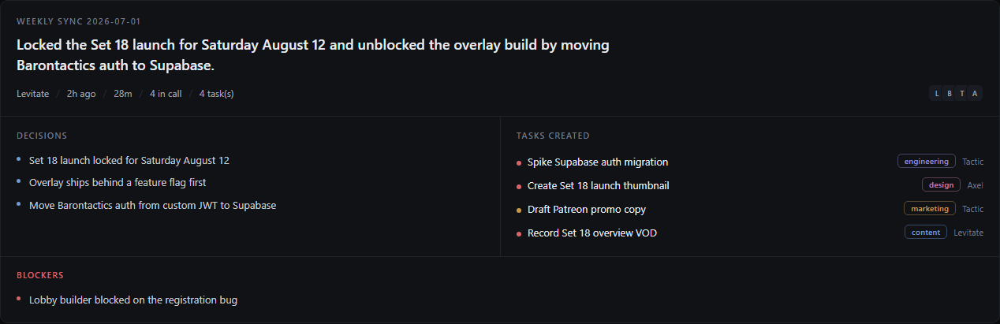
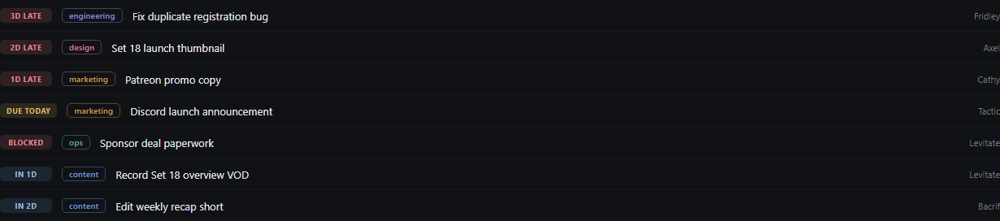
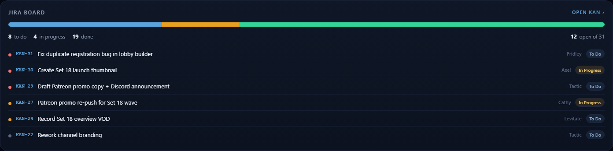

This bot sits in our Discord. It records a voice meeting, writes up a clean recap, turns the action items into tasks (on the board and in Jira), and shows the whole operation on a live dashboard. You mostly use two things: /record in a voice channel, and the dashboard in your browser.
/guide and the bot posts the same cheat sheet right there, with a dropdown for each topic. /guide share:true posts it for the whole channel, which is the quickest way to onboard someone.
Every command uses the same five status glyphs, so you learn them once.
| 🔴 | Overdue. The due date passed and the card is not finished. |
| 🟠 | Gone quiet. Untouched in the same column for 5 days or more. |
| 🟡 | Due soon. Landing within 2 days. |
| 🟢 | Healthy. Moving, on time. |
| ⛔ | Blocked. Cannot move until somebody clears it. Always sorts first. |
The colour strip down the left of a card means the same thing: red needs you today, amber is a warning, green is fine. Dates render in your timezone, so "in 2 days" means two days for you.

The headline feature. Hop in a voice channel, run two commands, and the bot does the rest.

/record start. The bot joins and starts listening. Everyone who talks is recorded on their own track, so it never cuts off after a pause, no matter how long the call runs./record status any time to see who it has heard./record stop when you are done (you can add a title: /record stop title:Weekly sync). It transcribes the call, then writes the recap with AI. A long meeting takes a couple of minutes.#bt-meetings./meeting with pasted notes instead, which sends no audio at all.Instead of a wall of text, you get a structured recap you can actually skim. It lands in two places: a card in #bt-meetings (the permanent record) and the top of the dashboard.

#bt-meetings post as a file if you ever need the exact words.A live, read-only view of everything. It refreshes itself every 20 seconds. Lodie shares the link (it looks like https://<something>.trycloudflare.com/?k=YOUR_TOKEN). Open it once and it remembers you.
The single most useful panel: one ranked list of what needs action right now - overdue, blocked, and due-today work, top to bottom. Start here.

The most recent recap, front and center: TL;DR, decisions, the tasks it created, blockers, and who was in the call. The full history sits in Meeting history lower down, where you can expand any past recap.
A live kanban of our Jira (the KAN project): To Do, In Progress, Done, with each card colored by type and tagged with priority and owner. Click any card to open it in Jira.

Type these in any channel in our Discord.
topic: to jump to one part, or share:true to post it for everyone.jiracheck tests the Jira link.| Thing | Where it goes |
|---|---|
| Meeting recap | #bt-meetings (permanent card + transcript file) and the dashboard's "Latest meeting". |
| Tasks you approve | The content board (Ideas column) and Jira (the KAN project), with links back. |
| New cards / ships / blocks | Announced live in the HQ channels as they happen. |
| Standup & digest | The standup channel, on a schedule and on demand. |
?k=...). After the first visit it remembers you./card done, /card move, /card block, /card unblock and /card assign all work straight from Discord, with autocomplete on the card title./record start and /record stop, and the audio is processed on our machine and deleted right after.Config lives in bt-bot/.env; restart the bot to apply changes. The keys: ANTHROPIC_API_KEY (AI recaps), WHISPER_CMD/WHISPER_MODEL (local transcription), JIRA_* (push to KAN), DASHBOARD_TOKEN (the web dashboard). To share the dashboard: npm run tunnel prints a public link. Full details in README.md and docs/USAGE.md.
/guide in Discord for the same thing without leaving the app. Also at docs/USAGE.md, and as a printable PDF in docs/.